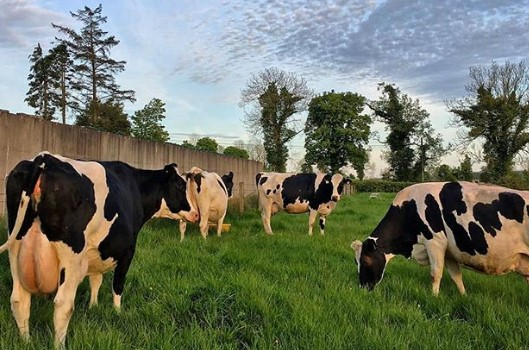
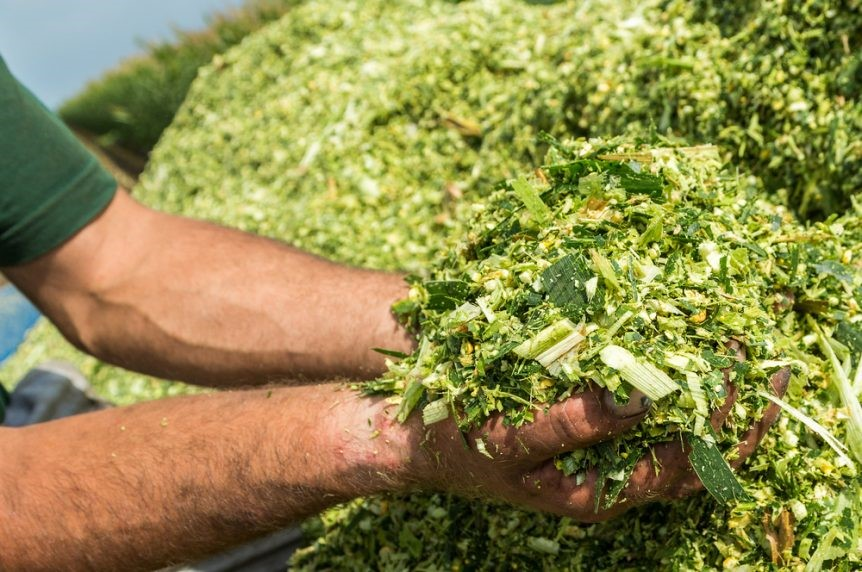
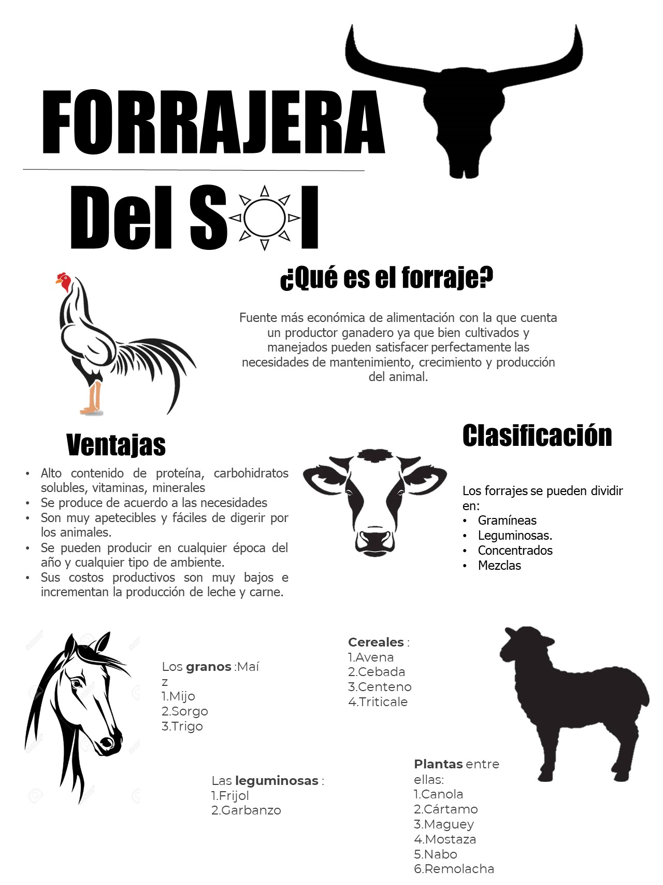

Beneficios

El productor debe ser consciente de que, en caso de que falte algún alimento natural —como forrajes para el ganado bovino o
incluso el agua— se ha de proporcionar y garantizar el suministro también en casos de emergencia, sea cual sea la época del
año o los recursos existentes. Todo esto garantizará que los animales tengan un puntaje en la CCF (clasificación de la
condición física) de al menos 2, como lo exige la norma.
Por ello se mencionan cuales son los beneficio y las desventajas que debemos tener en cuenta en un forraje o pienso para nuestros animales:
Ventajas
- Alto contenido de proteínas, carbohidratos, vitaminas y minerales.
- Se produce de acuerdo a las necesidades y puede sustituir a los concentrados.
- Se pueden producir en cualquier época del año y cualquier tipo de ambiente.
- Sus costos productivos son muy bajos e incrementa la producción de leche y carne.
- Disminuye el uso de mano de obra.
- Incrementa el peso de los animales en menor tiempo.
- Existe una gran variedad para cualquier tipo de animal.
Desventajas

- El proceso de secado exige que no llueva y que el ambiente sea lo más seco posible (con baja humedad relativa).
Esto es difícil en períodos cuando hay exceso de forraje, porque coincide con épocas de lluvias. En la mayoría de
gramíneas usadas para hacer heno, normalmente se necesitan hasta tres días para obtener el punto de secado adecuado.
- Cuando se dan las condiciones seguras para el secado (ausencia de lluvias), es cuando muchas especies están en floración o
ya han producido semillas, y por tanto su calidad nutritiva ha disminuido de manera importante, y por ende no se logra un heno
que aporte una buena cantidad de nutrientes a los animales.
- Cuando se quiere preparar un número grande de pacas de heno (más de 800), se requiere de maquinaria, para abaratar los costos y
acelerar el proceso, pero en ese caso los costos de inversión son altos.
Infografias Informativas


|

{kind=link}